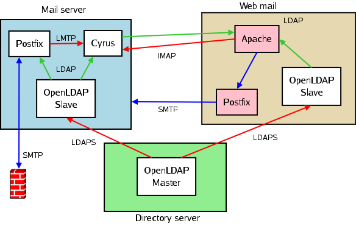

Migrating a Mail Server to Postfix/Cyrus/OpenLDAP
By René Pfeiffer and pooz
Once upon not so very long ago, a proprietary mail service system decided to stop working by completely suspending all activities every 15 minutes. We quickly used a workaround to regularly restart the service. After that, the head of the IT department approached Ivan and me and asked for a solution. We proposed to replace the mail system by a combination of Postfix, Cyrus IMAP, and OpenLDAP along with a healthy dose of TLS encryption. This article sheds some light on how you can tackle a migration like this. I am well aware that there is plenty of information for every subsystem, but we built a test system and tried a lot of configurations because we didn't see a single source of information that deals with the connection of all these parts.
Preparations
First I have some words of caution.
Moving thousands of user accounts with their mailboxes from one mail platform to another shouldn't be done lightly. We used a test server that ran for almost two months and tried to look at most of the aspects of our new configuration. Here is a rundown of important things that should be done in advance.
The Idea
You need to have a rough idea of what you want to achieve before you start hacking config files. Our idea was to replace the mail system running on CommuniGate Pro with a free software equivalent. Since our infrastructure is spread among multiple servers, we only had to worry about the mail server itself: how to recreate the configuration, how to move the users' data, and how to reconnect it with our external mail delivery and web mail system. We have external POP3/IMAP users that access their mail directly, and the web mail system uses IMAP. The relation of every server and service is shown in this little picture.

Putting everything together: we wanted a Cyrus server to handle the mailboxes, a Postfix server to deal with incoming and outgoing email, and an OpenLDAP server to hold as many settings as possible. The LDAP tree gets a lot of requests (we get 80000+ mail requests per day), so we decided that every server involved with user email should have a local copy in the shape of two OpenLDAP slave servers. The green lines in the diagram are read operations. The red lines are write operations. The blue lines denote SMTP transactions. Mail enters our system at the firewall, and every mail for outside domains is handled by the firewall, too. We will now take a look at how the services in the white boxes have to be configured in order to work in tune.
Encryption with OpenSSL
All of the software packages involved in the mail system are capable of using encryption via Transport Layer Security (TLS). We like to use TLS with SMTP, have our OpenLDAP servers do all synchronisations via LDAPS/LDAP+TLS, and offer IMAPS and POP3S.
TLS can be implemented by using OpenSSL and putting the necessary keys and certificates into the right place. You need the following files:
- a key for every server that uses TLS
- a certificate for that key, also on every server that uses TLS
- a certificate from the Certification Authority (CA) that signed your key in order to verify certificates
mkdir myCA
chmod 0700 myCA
cd myCA
mkdir {crl,newcerts,private}
touch index.txt
echo "01" > serial
cp /usr/share/examples/openssl/openssl.cnf .
Use the sample openssl.cnf file and edit the values in the section ca or CA_default. The paths need to point to the directories we have just created. You also need to edit the information about your CA in the root_ca_distinguished_name section. A sample openssl.cnf is attached to this article.
When you have taken care of your CA's configuration you can create its private key and certificate.
openssl req -nodes -config openssl.cnf -days 1825 -x509 -newkey rsa -out ca-cert.pem -outform PEMAfter that, all you have to do is to create a key and a certificate request for every server you wish to involve in encrypted transmissions.
openssl genrsa -rand /dev/random -out yourhost.example.net.key openssl req -new -nodes -key yourhost.example.net.key -out yourhost.example.net.csrI use /dev/random as the entropy source. If your system lacks sufficient I/O (i.e., keyboard strokes or mouse movements) or has no hardware random generator, you might consider using /dev/urandom instead. Signing this key with your own CA in this directory is done by using:
openssl ca -config openssl.cnf -in yourhost.example.net.csr -out yourhost.example.net.cert
In order to use encryption and to allow certificate verification, you will have to copy your CA's certificate ca-cert.pem, your host's key yourhost.example.net.key, and the key certificate yourhost.example.net.cert to your system configuration. We will soon see how we use these parts together with Postfix and OpenLDAP.
OpenLDAP Structure
The idea is to use a central OpenLDAP server to store all user settings and some of the Postfix lookup maps. We use the LDAP tree of our organisation dc=example,dc=net and create a subtree for all our accounts. Then we create another subtree for the Postfix settings. You can think of the subtrees being containers for data, mainly accounts.
- ou=accounts,dc=example,dc=net
- ou=system,ou=accounts,dc=example,dc=net
- cn=cyrus,ou=system,ou=accounts,dc=example,dc=net
- cn=postfix,ou=system,ou=accounts,dc=example,dc=net
- cn=webmail,ou=system,ou=accounts,dc=example,dc=net
- ou=users,ou=accounts,dc=example,dc=net
- ou=system,ou=accounts,dc=example,dc=net
- ou=edv,dc=example,dc=net
- ou=server,ou=edv,dc=example,dc=net
- cn=mailstore,ou=server,ou=edv,dc=example,dc=net
- cn=postfix,cn=mailstore,ou=server,ou=edv,dc=example,dc=net
- lookupName=aliases,cn=postfix,cn=mailstore,ou=server,ou=edv,dc=example,dc=net
- lookupName=mydestination,cn=postfix,cn=mailstore,ou=server,ou=edv,dc=example,dc=net
- lookupName=virtualdomains,cn=postfix,cn=mailstore,ou=server,ou=edv,dc=example,dc=net
- lookupName=virtualusers,cn=postfix,cn=mailstore,ou=server,ou=edv,dc=example,dc=net
- cn=postfix,cn=mailstore,ou=server,ou=edv,dc=example,dc=net
- cn=mailstore,ou=server,ou=edv,dc=example,dc=net
- ou=server,ou=edv,dc=example,dc=net
- account
- greenUser
- pkiUser
- posixAccount
- sambaSamAccount
- shadowAccount
- cn - the full name of the user
- gidNumber - group id number (we use 100 as default)
- homeDirectory - the user's home (we use /home/user.name as default)
- mail - full mail address
- sambaSID - only used for Samba (we use S-1-0-0 as default)
- uid - the user's user name used for the login
- uidNumber - the user's numerical id
- userPassword - the user's password
The gidNumber, homeDirectory and uidNumber attributes are only necessary if you have services other than POP3/IMAP get their information from the LDAP tree. Cyrus and Postfix don't need them. The same is true for the sambaSID. Since we reorganise our user account data anyway, we can do it properly in case other applications want to use the LDAP tree as well. Additional attributes handy for mail processing are the following.
- accountStatus - useful for disabling/enabling users without deleting them
- mailAlternateAddress - here you store any aliases the user has
- mailForwardingAddress - address where the user's mail gets forwarded to
- mailQuotaSize - mail quota of the mailbox in kiloBytes
- mailReplyText - text for use with autoreplies such as vacation messages
- mailServer - server where the account is valid
Two other new classes are the lookupName and lookupTableEntry for the Postfix lookup tables. Postfix supports arbitrary lookup schemes. lookupName is a container for single lookupTableEntry entries that match a lookupKey to a lookupValue. This allows for a very simple mapping of anything to anything.
lookupKey=rene.pfeiffer@example.net ---> lookupValue=lynx lookupKey=ivan.averintsev@example.net ---> lookupValue=ivan lookupKey=disable@example.net ---> lookupValue=devnull
For your convenience this schema definition is also in a separate file. Use it as you like.
Extracting Settings from the old System
User Configurations
First of all it is necessary to extract all the account information including user names, passwords, quote settings, aliases, and the like. The CommuniGate server offers an LDAP export. Querying all user data can be done with a Perl script named cgate_migrate_ldap.pl. The script extracts the attributes cn, sn, uid, mail and userPassword. The result is written to our new LDAP server. If the user already exists on the target server, the user information is compared and updated provided there is a difference. You can take a look the the script's options by using perldoc cgate_migrate_ldap.pl.
Unfortunately this export does not cover all necessary information, so we had to write a second Perl script that collects additional information from the server's account.settings files. These files look like the following, and usually live inside the user's directory /var/CommuniGate/Accounts/user.name.macnt/.
{
DefaultMailboxType = MailDirMailbox;
ExternalINBOX = NO;
MaxAccountSize = 100M;
MaxWebSize = 0;
Password = XXXXXXXX;
RealName = "Rene Pfeiffer";
RPOPAllowed = NO;
Rules = ((0,"#Vacation",(("Human Generated","---"),(From,"not in","#RepliedAddresses")),
(("Reply with","Ich bin vom 6. bis 13. Oktober 2005 fuer Nachrichten\enicht erreichbar.
Bitte alle dringenden Anfragen\ean help@example.net richten."),
("Remember 'From' in",RepliedAddresses))));
}
You can see the quota setting and the automated rules for vacation messages or mail forwardings.
They aren't exported via LDAP and have to be obtained this way. First, we need all
account.settings files. You can collect all of them with the following commands (you
must have read permissions):
cd /var/CommuniGate/Accounts/
find . -type f -name account.settings | xargs -i{} tar -r --numeric-owner -f ~/as.tar {}
You can then copy the archive as.tar to another place where fiddling with the files
doesn't cause any harm. We moved it to our test server, extracted it, and built a list of
paths to all files. We then used this list as input to our Perl script.
mkdir accounts cd accounts tar -xf ~/as.tar find ~/accounts -type f -printf "%h%f\n" > ~/as_list.txtNow you can feed this list to cgate_account_settings.pl and update the user settings in the LDAP tree.
~/cgate_account_settings.pl --target ldapmaster.example.net ~/as_list.txtAgain, you can look up the options of the script by using perldoc. The migration script has some built-in defaults to reduce the size of the command in the command line. The last thing missing is the user alias list. The CommuniGate stores it as a single file, /var/CommuniGate/Accounts/Settings/aliases.data. Every user is listed with all aliases in a single line. The format looks like this:
rene.pfeiffer = (r.pfeiffer,rpfeiffer,lynx);A third script, cgate_alias_settings.pl, took care of parsing this file and writing the aliases to the mailAlternateAddress attribute. It is invoked similarly to the other two.
~/cgate_alias_settings.pl --target ldapmaster.example.net aliases.data
That's all we wanted to extract. Important note: The scripts we used worked well enough for our case. We tried to get as much information as possible. We didn't want to parse everything. So be careful and test these scripts before you use them on live data. They might miss something.
Mailing Lists
The CommuniGate Pro has a built-in list server. It works fairly well, but it has the habit of rewriting the mail headers when forwarding mail to lists (and to users - that's one of the reasons why we decided to switch). So far we haven't seen any sign of the list configuration. They aren't exported via LDAP and the user settings don't have any list settings. Since we wanted to move the lists to our new list server and therefore to change their addresses anyway, we extracted all list members and created simple exploder lists with Postfix hash tables. The CommuniGate stores all list information in the /var/CommuniGate/Accounts/LISTS/ folder. The files ending with .list contain all subscribers. A shell script can read all lists and create the maps for the Postfix.
./create_list_maps.sh /var/CommuniGate/Accounts/LISTS/ ~/cgate_lists
We will use cgate_lists in our Postfix configuration later. Important note: This simple script ignores deactivated users on mailing lists. This is only a temporary solution until you can recreate the lists on a real list server and have the list owners check their subscribers.
IMAP Namespace and Mailboxes
Whenever you copy mailboxes from one server to another, you have to keep in mind how the clients see the mail data. We tried to make the move as smooth as possible. Two things got into our way. First of all, the Cyrus IMAP server treats the INBOX as the root and shows all other mail folders "below" the INBOX. The old mail system used a flat-hierarchy namespace.
Old server: imap://imap.domain.xyz/Sent Cyrus IMAP: imap://imap.domain.xyz/INBOX/Sent
Most clients get the idea and display the folders accordingly. We had to hack our webmail in order to subscribe all the old folders with the new namespace in order not to bother our web users. Clients such as mutt, Thunderbird or Sylpheed handle this change for you; however, you still need to rearrange the folder structure. Some clients need to recreate the account settings by adding a new account.
Another issue concerns the user names. By default Cyrus uses the netnews namespace convention. This means that a "." is used to separate hierarchical layers (as the Usenet does). If you allow "." to appear in a user's login, then you need to configure Cyrus to use the UNIX hierarchy convention. Cyrus uses the simple option unixhierarchysep=yes|no in its configuration. By doing this a "/" is used as a separator. Don't be suprised to see something like "user.rene^pfeiffer" in the logs or mail store. This is how a mailbox is addressed by Cyrus IMAP, and the "." in the login is handled internally as a "^".
A Word about Transferring Quotas
When we extracted the user settings, we copied them 1:1 into the LDAP tree and into the Cyrus user settings. We also did this for the quota. To our great surprise, this created a rather unpleasant situation. Apparently the CommuniGate and the Cyrus server compute the quotas differently. Mailboxes that were almost at the limit on the old system became over quota on Cyrus. So we had to add 5 MB to the quota of every user in order to accommodate the mail from the old mailbox. Make sure that you have a buffer for this, or your users will lose emails.
Configuration
Ok, let's get our hands dirty and configure the servers.
OpenLDAP Setup
Designing an LDAP hierarchy is a complex topic. You can spend months thinking about the best way to go. We won't do an elaborate design. We need to store our users' settings and the Postfix lookup tables, that's all. If you want to extend your LDAP tree beyond that, make sure that you get well acquainted with the concepts. We use OpenLDAP for all LDAP servers. Most Linux distributions have a pre-packaged version. You can also compile the server from source. Use whatever method you feel comfortable with - but make sure that you can handle the upgrades and the bug fixing. We compiled OpenLDAP from source and used the following options.
./configure --sysconfdir=/etc/ldap --localstatedir=/home/ldap/var \ --with-cyrus-sasl --with-threads --with-tls --enable-slapd --enable-crypt \ --enable-spasswd --enable-wrappers --enable-ldbm --enable-perl --enable-shell --enable-slurpdMake sure that you have Berkeley DB, OpenSSL, Cyrus SASL, Perl, TCP wrappers, and GNU dbm, plus their development packages, installed. After compiling and installing you should end up with
- the OpenLDAP binaries and libraries
- a directory where your configuration is stored (such as /etc/ldap/)
- a System V init script that starts and stops your OpenLDAP server (usually this is to be found in /etc/init.d/, the source distribution has templates).
The OpenLDAP distribution includes a couple of schema definitions. These cover the basic LDAP object classes and their attributes. We extended the schemas by using additional schema files from Sendmail, Samba, Mozilla, and a modified schema file from qmail-ldap. You can simply add the schema files to your existing configuration. However, you have to take care that your schemas don't define any attributes twice. It's best to test that in advance. We will now build the configuration for the master and the two slave servers.
Master Server
Basically an OpenLDAP server is a program that exports a directory filled with databases via the network. You have to configure the paths to the database store, where it finds the schema files, where it stores its process ID, and the permissions for the LDAP tree. I have provided a sample slapd.conf config file, and I will highlight the most important options. First we have the schema files.
include /etc/ldap/openldap/schema/core.schema include /etc/ldap/openldap/schema/cosine.schema include /etc/ldap/openldap/schema/nis.schema include /etc/ldap/openldap/schema/misc.schema include /etc/ldap/openldap/schema/inetorgperson.schema include /etc/ldap/openldap/schema/sendmail.schema include /etc/ldap/openldap/schema/samba.schema include /etc/ldap/openldap/schema/mozillaOrgPerson_V0.6.schema include /etc/ldap/openldap/schema/greenmta.schema include /etc/ldap/openldap/schema/lookup.schemaThe schema files are included in this order. You can see that we have chosen to put our server config into /etc/ldap/openldap/.
The next important part deals with encryption. I mentioned earlier that every server should have a key and a certificate. Copy these files to your config directory and tell OpenLDAP to read and to use them. You also have to include your CA's certificate if you want to check the signature.
TLSCACertificateFile /etc/ldap/openldap/cacert.pem TLSCertificateFile /etc/ldap/openldap/master.example.net.cert TLSCertificateKeyFile /etc/ldap/openldap/master.example.net.key TLSRandFile /dev/random
We use /dev/random as the entropy source since our servers have hardware entropy generators. If your machine lacks good entropy sources, you should use /dev/urandom instead.
Now we define where our databases live and what the root of the LDAP tree will be. We also configure an OpenLDAP super user.
database bdb
suffix "dc=example,dc=net"
rootdn "cn=ldaproot,dc=example,dc=net"
rootpw {SSHA}Rwilfur49jrtPsw7dJJPp5RBoX2f+gHV
directory /var/lib/ldap
We want to use the Berkeley databases (bdb). The root of our tree is called
dc=example,dc=net. Our superuser account is called cn=ldaproot,dc=example,dc=net. The
password is hardcoded into the config file; therefore, it is a good idea to encode it so that not
everyone can see it immediately. The command slappasswd can be used to do this.
lynx@wombat:~$ /usr/local/sbin/slappasswd -s 6202f430d9c9a97da8d041946847643f
{SSHA}Rwilfur49jrtPsw7dJJPp5RBoX2f+gHV
lynx@wombat:~$
The password is 6202f430d9c9a97da8d041946847643f. The output of slappasswd can be pasted into the config file. The last option defines the directory where the databases are stored.
The OpenLDAP master server holds the master copy of the LDAP tree. Every change is copied immediately to all slave servers. This is called replication. It is a kind of instant backup with the difference that the date is transferred to live servers. The master server needs to know where to copy the data to. This can be configured by using the replica directive.
replogfile /var/lib/ldap/replogfile replica uri="ldaps://slave1.example.net" starttls=yes bindmethod=simple \ binddn="cn=ldaproot,dc=example,dc=net" credentials="6202f430d9c9a97da8d041946847643f" replica uri="ldaps://slave2.example.net" starttls=yes bindmethod=simple \ binddn="cn=ldaproot,dc=example,dc=net" credentials="6202f430d9c9a97da8d041946847643f"
Every replica line describes the slave server along with the full login information. The account at the slave server needs full write permissions, or else the information on the slave servers can't be written. That's why we used the LDAP superuser. Another approach is to define a special replication user just for this purpose. The master server keeps a log of changes for every slave. In case a connection to a specific slave is lost, the changes get buffered and are sent to the slave as soon as it is reachable again.
Slave Servers
The OpenLDAP slave servers have a similar configuration to the master server. You have to keep some important things in mind.
- The slave has neither replica nor replogfile directives.
- The slave has an additional updatedn option that must be the same as the binddn used in the master config file.
- The DN mentioned in the updatedn option must have write access to the tree.
- If you wish to write to your slave server, you have to include an updateref directive that points to your master server. Clients issuing write operations will then be redirected to the master.
- Shut down the master server.
- Extract a copy of the master's data in LDIF notation by executing slapcat -f /etc/ldap/openldap/slapd.conf master_dump.ldif.
- Copy the resulting master_dump.ldif file to your slave server.
- Fill the slave's database by executing slapadd -f /etc/ldap/openldap/slapd.conf master_dump.ldif. Make sure the OpenLDAP server there is shut down!
- Restart the master server.
- Start the slave server.
After that, your master server should log into the slave and send updates as soon as you modify the master LDAP tree. Master and slaves have a steady TCP connection that you can see by using netstat. Important note: Don't forget to create a new key and certificate for the slave or else the encryption won't work.
Postfix Setup
We used standard Debian Postfix packages. You have to install the packages postfix, postfix-ldap, postfix-pcre, and postfix-tls for the functionality we need. If you compile from source, make sure you have the PCRE, OpenLDAP, and OpenSSL development files installed.
Lookup Tables
The Postfix server can be linked to any LDAP V3 server. Since the OpenLDAP server is similar to an electronic phonebook, it makes sense to connect the Postfix to any entries that it might have to look up when receiving email.
- alias_maps - aliases that should be used when doing local delivery
- mydestination - the list of domains that are local
- local_recipient_maps - list of local recipients, this helps Postfix to decide whether to accept the mail before it is completely transferred
- virtual_alias_domains - list of domains that are virtual and whose users are mapped to local mailboxes
- virtual_alias_maps - the mapping of the virtual addresses to the local mailboxes itself
By retrieving this information from the LDAP tree, you can map almost everything to your local mailboxes. Our scenario has one main domain that goes into mydestination (plus the local names for the machine). All satellite domains with just a few aliases go into the virtual_alias_domains where the email address is mapped to real local mailboxes by our lookupTable object class.
Well, this is all nice, but how is it written to the Postfix configuration? Let's start with mydestination. Usually you list the local domains as a simple string like this:
mydestination = agamemnon.example.net, localhost.localdomain, localhostIf you want Postfix to get this information from the OpenLDAP server, you just have to change this line to
mydestination = localhost, ldap:/etc/postfix/mydestination.cfand create the file /etc/postfix/mydestination.cf. The string 'localhost' is hardcoded into the configuration, because localhost isn't likely to go anywhere else. After that Postfix reads mydestination.cf. This file tells Postfix how to connect to the LDAP server, where and how to search for the local domains. If we connect to the OpenLDAP slave server on localhost, we don't need TLS since we'll be talking to the loopback device. We tell Postfix to look into the mydestination subtree and look for the attribute lookupKey.
server_host = 127.0.0.1 server_port = 389 search_base = lookupName=mydestination,cn=postfix,cn=mailstore,ou=server,ou=edv,dc=example,dc=net scope = sub timeout = 30 bind = yes bind_dn = cn=postfix,ou=system,ou=accounts,dc=example,dc=net bind_pw = XXXXXXXXXX version = 3 start_tls = no query_filter = (lookupKey=%s) result_attribute = lookupValueIn the case of mydestination, the result attribute can contain anything. If Postfix finds a match, it knows that the domain is local. If it doesn't, then the mail is rejected. This technique can now be used for other lookup tables. Some directives will involve multiple lookups in different tables, but this is no problem for Postfix.
alias_maps = hash:/etc/aliases, hash:/etc/postfix/cgate_lists
virtual_alias_domains = ldap:/etc/postfix/virtual_alias_domains.cf
virtual_alias_maps = ldap:/etc/postfix/mailforwards.cf ldap:/etc/postfix/virtual_alias_maps.cf
ldap:/etc/postfix/ldap-user-aliases.cf
local_recipient_maps = ldap:/etc/postfix/local_recipient_maps.cf $alias_maps $virtual_alias_maps
The alias_maps are the local lookup tables for the system aliases. We use no LDAP lookup there, because we're dealing with static names. We also put the migrated mailing lists there. They consist of simple exploder lists where the left side is the name of the list and the right side holds all subscribers. Bear in mind that this is a poor substitution for a full list server and a temporary solution at best.
The virtual_alias_domains is a table with virtual domains, just as the name implies. This is only "half" of a lookup table since Postfix only needs to know if a domain is present and counts as virtual or not. Postfix therefore only evaluates the result of the LDAP search - found or not found. Technically this means that you can put what you want into the lookup value when adding a virtual domain. You can take a look at virtual_alias_domains.cf to see that there is no difference from the lookup method we already discussed.
We then define the virtual_alias_maps by a number of three LDAP lookups. The order is important.
- mailforwards.cf checks the attribute mailForwardingAddress. If it is present, then Postfix forwards the mail to this address. Local mailboxes are valid targets, but you need to name them without the domain.
- virtual_alias_maps.cf does the mapping of virtual users to real mailboxes. For example, we map rene.pfeiffer@example.org to the mailbox rene.pfeiffer.
- ldap-user-aliases.cf maps any alias addresses stored in the attribute mailAlternateAddress to the primary email address stored in mail.
The last lookup definition deals with anything that is recognised as local. That's the job of local_recipient_maps. We consider anything local that is either defined in alias_maps, virtual_alias_maps, or by the lookup configured in local_recipient_maps.cf. The LDAP table simply looks in the account branch for any valid user account.
Local Delivery to Mailboxes
Any mail bound for local recipients must be stored into the mailboxes. Postfix doesn't handle mailboxes, but the Cyrus IMAP server does. Both servers support the Local Mail Transfer Protocol (LMTP). LMTP is a queueless mail transmission protocol used for local mail transport, as the name suggests. Postfix's configuration file needs the following directives.
mailbox_transport = lmtp:localhost lmtp_sasl_auth_enable=yes lmtp_sasl_password_maps=hash:/etc/postfix/lmtp_passwd lmtp_sasl_security_options = noanonymousmailbox_transport indicates where the LMTP receiver is located. You might need to add a definition for lmtp to your /etc/services. Important: LMTP must not use port 25! The other three lines tell Postfix that the LMTP transmission requires authentication. Cyrus has its own accounts for its subsystems and we wanted to have an lmtpadmin. Thus the file lmtp_passwd contains:
localhost lmtpadmin:secretpassword
It advises Postfix to use the username lmtpadmin with the given password when using LMTP on localhost.
TLS Encryption
TLS is the last setting we need. Postfix supports TLS encryption with many configuration options. The bare bones setup needs only a few. Here is the part for the SMTP server subsystem:
smtpd_tls_cert_file = /etc/ldap/openldap/mailstore.example.net.cert smtpd_tls_key_file = /etc/ldap/openldap/mailstore.example.net.key smtpd_tls_CAfile = /etc/ldap/openldap/ca-cert.pem smtpd_use_tls = yes smtpd_enforce_tls = no smtpd_tls_ask_ccert = no smtpd_tls_req_ccert = no smtpd_tls_dh1024_param_file = /etc/postfix/dh_1024.pem smtpd_tls_dh512_param_file = /etc/postfix/dh_512.pemThe first three lines tell Postfix where the key, the certificate, and the CA's certificate is stored. Then we switch TLS on. Make sure that you still accept connections without TLS (TLS-only mail servers do not strictly conform to the RFCs). smtpd_tls_ask_ccert and smtpd_tls_req_ccert say that we neither request nor require client certificates. smtpd_tls_dh1024_param_file and smtpd_tls_dh512_param_file point to files that contain the so-called Diffie-Hellman key agreement protocol parameters. You can either copy them from existing configurations or create them yourself by using OpenSSL.
openssl gendh -out /etc/postfix/dh_1024.pem -2 -rand /dev/random 1024 openssl gendh -out /etc/postfix/dh_512.pem -2 -rand /dev/random 512
By executing the above command, the parameters are generated. Important note: The above lines use /dev/random as the entropy source. Again, if your server has no good entropy sources such as sufficient disk I/O or hardware entropy gatherers, then you should consider using /dev/urandom instead.
Postfix acts as an SMTP client when delivering outbound mail. This part has separate TLS config options.
smtp_use_tls = yes smtp_tls_note_starttls_offer = yes smtp_tls_CAfile = /etc/ldap/openldap/ca-cert.pem
They are similar to the server options above.
You can read the whole Postfix configuration main.cf and see all of the options together.
Cyrus IMAP Setup
We used the Debian Cyrus IMAP package. It is quite painless to install, and you only need to take care of a few things. The configuration files you will be dealing with are
- /etc/cyrus.conf for general settings
- /etc/imapd.conf (which also handles the POP3 settings)
- and /etc/saslauthd.conf for the login.
Login Configuration
Whenever an user wishes to fetch email via IMAP or POP3, the Cyrus server needs to verify the login information. One possibility to do this with our OpenLDAP servers is to use the SASL AUTH daemon and plaintext authentication. Plaintext isn't a problem since we offer TLS for every connection. Every client capable of TLS is able to encrypt the session with the Cyrus server. The LDAP parameters are defined in /etc/saslauthd.conf:
ldap_servers: ldap://127.0.0.1/ ldap_version: 3 ldap_timeout: 10 ldap_time_limit: 10 ldap_cache_ttl: 30 ldap_cache_mem: 32768 ldap_scope: sub ldap_search_base: ou=accounts,dc=example,dc=net ldap_auth_method: custom ldap_bind_dn: cn=ldaproot,dc=example,dc=net ldap_password: 6202f430d9c9a97da8d041946847643f ldap_filter: uid=%U
The SASL AUTH daemon is told to connect to the local LDAP slave and to search for a match between login name and the attribute uid. In order to check the password, the daemon has to bind as LDAP superuser, because only the superuser has access to the userPasswd attribute. If you are uncomfortable with this, you can define additional LDAP users that may check userPasswd. The other parameters set limits and the search tree. Important note: This file mustn't be word-readable! It contains an important password, so guard this information well.
Now your SASL AUTH daemon knows where to look for login information. You still have to tell the Cyrus IMAP that it should utilise the SASL AUTH daemon.
Cyrus Configuration
Now we turn to the other two configuration files, namely cyrus.conf and imapd.conf. I won't explain every single option; I'll focus on the things that connect our services instead. In order to make Cyrus use the SASL AUTH daemon for authentication, you need to check for the following entries in imapd.conf:
allowplaintext: yes sasl_mech_list: PLAIN sasl_pwcheck_method: saslauthdCyrus will then allow plaintext logins and ask saslauthd to verify the login credentials. I mentioned encryption earlier. Now you have to decide whether you want to force your mail clients to use encryption or not. There is an option that sets the minimum amount of protection for the login. You could use either
- sasl_minimum_layer: 0 to allow unencrypted connections or use
- sasl_minimum_layer: 128 to allow only connections with a minimal security level.
tls_cert_file: /etc/ldap/openldap/mailstore.example.net.cert tls_key_file: /etc/ldap/openldap/mailstore.example.net.key tls_ca_path: /etc/ssl/certsThe CA's certificate file must be stored in the directory /etc/ssl/certs/. Again you have a choice of policy:
- tls_imap_require_cert: 0 to allow anyone to connect or
- tls_imap_require_cert: 1 to allow only clients with a valid certificate.
If you want to use the second method, you have to make sure that every mail client can verify your certificate. Thus the first way only encrypts, while the second checks for the right identity.
As for the settings that control mail delivery via IMAP or POP3, be sure to check for
popminpoll: 0
We ran our server with popminpoll: 1 to reduce the impact of impatient mail clients. If you do this, then Cyrus will lock out any software that polls too often. Surprisingly there are a lot of mail clients out there that do funny stuff with poll intervals and use multiple connections while polling email. We switched the checks off. The load you save on the server will only be redirected to the phone support lines. For us it wasn't worth the effort. The same is true for APOP. APOP is a way to hide the password from sniffers when fetching email. We prefer TLS, so we turn APOP off.
allowapop: no
You have to define admin users for the Cyrus server. Admin users are regular Cyrus users with privileges.
admins: cyrusadmin postmaster lmtp_admins: lmtpadmin
We have two Cyrus superusers named cyrusadmin and postmaster (we need a postmaster mailbox anyway). We also have a separate admin lmtpadmin. These accounts have passwords and can be used on the Cyrus command line or via the Cyrus Perl packages Cyrus::IMAP::Admin.
Migrating the Users
The migration of all user account meta data is done through the three Perl scripts. This takes care of any settings concerning login, email adresses, aliases, quotas and the like. Bear in mind that the three scripts work well enough, but they are not 100% accurate. You will miss some mail forwardings or other things. All this takes place on the LDAP side. We still have to deal with the IMAP mailboxes and their content.
Synchronisation with the LDAP Tree
Since we must all bow to the master LDAP tree, we came up with a script that reads every user description from the master, connects to the Cyrus IMAP server, compares account information, and updates them on the Cyrus side, including the creation of new mailboxes. The Perl module Cyrus::IMAP::Admin is very handy for things like this. cyrus_syncboxes.pl does the synchronization. It is designed to run on the mail server, since this server also carries an LDAP slave, but you can feed options to the script to make it talk to other hosts as well. It has documentation that can be viewed by using perldoc cyrus_syncboxes.pl.
Moving the Mailboxes
Now is the critical moment. We need to migrate the users' mail. Gilles Lamiral has created a fine piece of software for this job. It is called imapsync. It synchronizes IMAP boxes. By using it on an empty and a full IMAP box, it recreates the folder structure of the full box on the empty one. You can use it like this:
imapsync --host1 oldserver.example.net --user1 r.pfeiffer --password1 XXXXXXXX \
--host2 newserver.example.net --user2 r.pfeiffer --password2 XXXXXXXX \
--syncinternaldates
It then copies the whole mailbox of user r.pfeiffer from oldserver.example.net to newserver.example.net. The switch --syncinternaldates preserves the folder internal timestamps of the messages. Every mail has two timestamps - the RFC 822 date in the header and the RFC 2060 Internal Date Message Attribute. Most IMAP clients can be configured to display either date. If you preserve the internal timestamps, you will have less trouble with IMAP clients or users getting confused about changing timestamps in messages. imapsync has many more features, but we only needed to use this one.
You have to call imapsync for every mailbox. If you have several thousand mailboxes, then you need to use a little shell script and a list of usernames with the passwords in CSV (Comma Separated Value) format.
user0001;password0001;user0002;password0002 user0011;password0011;user0012;password0012We created a CSV list of all login data from our LDAP tree. When you have this list, you can pack the command into a shell loop and process the mailboxes in serial order. This fragment is taken from the imapsync documentation.
{ while IFS=';' read u1 p1 u2 p2; do
imapsync --user1 "$u1" --password1 "$p1" \
--user2 "$u2" --password2 "$p2" \
--syncinternaldates
done ; } < login_data.csv
Now is the time for some fresh coffee and the last checks before the new system goes online. The syncing of the mailboxes takes a while. We needed several hours for about 14 GB of mailbox data.
Testing
After doing all the steps I have described, you should have a shiny new mail system with lots of users and mailboxes. Before you put everything into production mode, you should spent some time on testing the whole setup. You can tell Postfix not to create terminal bounces by using
soft_bounce = yes
in main.cf. If valid mail is rejected, you can see it in the logs and correct the settings. Also check the access to the mailboxes by using POP3 and IMAP clients. Leave the old server for a while so that you can compare folder contents. If you are comfortable with everything, switch to production mode, but make sure you monitor the new system closely. Well, have fun with the new setup!
Tools
You need tools to get your work done. Here are ours.
Scripts & Configuration Files
Our own scripts were exclusively written with the help of Perl and Bash. This article includes all necessary scripts and configuration files to tackle a mail migration from CommuniGate Pro to Postfix/Cyrus/OpenLDAP. From then on, you need more tools such as front ends for user administration. There are some tools you can use, or you can also write your own. It depends on what you need.
Packages
No animals or software were harmed in the course of the migration. You might wish to take a look at the following tools and recipes and thank their authors.
- Cyrus IMAP Server
- imapsync
- JXplorer
- OpenLDAP
- OpenSSL Certificate Authority Setup
- phpLDAPadmin
- PHP PEAR Net_Sieve
- Perl LDAP
- Postfix
- SmartSieve - Sieve Script Manager
Talkback: Discuss this article with The Answer Gang
René Pfeiffer
![[BIO]](../gx/authors/pfeiffer.jpg)
René was born in the year of Atari's founding and the release of the game Pong. Since his early youth he started taking things apart to see how they work. He couldn't even pass construction sites without looking for electrical wires that might seem interesting. The interest in computing began when his grandfather bought him a 4-bit microcontroller with 256 byte RAM and a 4096 byte operating system, forcing him to learn assembler before any other language.
After finishing school he went to university in order to study physics. He then collected experiences with a C64, a C128, two Amigas, DEC's Ultrix, OpenVMS and finally GNU/Linux on a PC in 1997. He is using Linux since this day and still likes to take things apart und put them together again. Freedom of tinkering brought him close to the Free Software movement, where he puts some effort into the right to understand how things work. He is also involved with civil liberty groups focusing on digital rights.
Since 1999 he is offering his skills as a freelancer. His main activities include system/network administration, scripting and consulting. In 2001 he started to give lectures on computer security at the Technikum Wien. Apart from staring into computer monitors, inspecting hardware and talking to network equipment he is fond of scuba diving, writing, or photographing with his digital camera. He would like to have a go at storytelling and roleplaying again as soon as he finds some more spare time on his backup devices.
pooz
![[BIO]](../gx/2002/note.png)
pooz is a system administrator/Web application hacker working in Vienna, Austria. Free/Open Source software has been his tool of choice since early 90s.